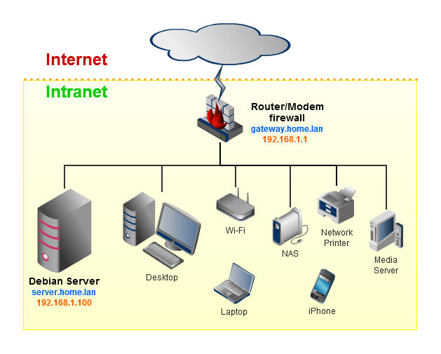

1. Fundamentos de redes de datos de área local.
1.1 Definición y función de una red local.
Definición
Una red LAN es un conjunto de dispositivos de red conectados entre sí en un área geográfica limitada. Estos dispositivos pueden incluir computadoras, servidores, impresoras, routers, switches y otros dispositivos de red. La red LAN permite a estos dispositivos comunicarse entre sí, compartir recursos, archivos, información y acceder a servicios comunes, como Internet y/o bases de datos compartidas.
Las redes de área local (LAN) se han vuelto cada vez más populares en entornos empresariales y educativos, ya que ofrecen muchas ventajas sobre otras formas de conexión a Internet.
¿Cómo funciona una red LAN?
Las redes LAN funcionan a través de una combinación de hardware y software. Los dispositivos de red, como routers y switches, se utilizan para establecer conexiones físicas entre los dispositivos de la red.
Una red LAN generalmente se conecta a Internet a través de un dispositivo central, como un router, que actúa como el punto de acceso principal. En redes domésticas, un único enrutador suele ser suficiente, mientras que en entornos más grandes, como oficinas o edificios, se pueden utilizar conmutadores adicionales para mejorar la eficiencia en la entrega de datos.
La red LAN utiliza principalmente dos tecnologías para la conexión de dispositivos: Ethernet y Wi-Fi. Ethernet, un protocolo de conexión física, requiere cables para transmitir datos, mientras que Wi-Fi permite la conexión inalámbrica mediante ondas de radio, ofreciendo mayor flexibilidad en la ubicación de los dispositivos.
1.2 Características de una red local.
Las principales características que definen a cada una de las redes locales son las siguientes:
- Una red LAN abarca un área geográfica relativamente pequeña, como un edificio, una oficina, una institución educativa o un campus.
- Las redes LAN suelen utilizar cables físicos, como cables Ethernet, para interconectar los dispositivos, esto proporciona una conexión estable y de alta velocidad.
- Las redes LAN tienen la capacidad de compartir recursos entre los dispositivos conectados, esto incluye compartir archivos, impresoras, servidores, conexiones a internet y otros recursos locales.
- Las redes LAN ofrecen un mayor nivel de privacidad y seguridad en comparación con las redes públicas. Al ser una red interna, se pueden implementar medidas de seguridad, como firewalls y sistemas de autenticación, para proteger los datos y los dispositivos conectado.
1.3 Componentes básicos de una red local.
Servidor
Es una computadora que, formando parte de una red, provee servicios a otras computadoras denominadas clientes. También se suele denominar con la palabra servidor a Una aplicación informática o programa que realiza algunas tareas en beneficio de otras aplicaciones llamadas clientes. Algunos servicios habituales son los servicios de archivos, que permiten a los usuarios almacenar y acceder a los archivos de una computadora y los servicios de aplicaciones, que realizan tareas en beneficio directo del usuario final.

Estaciones de Trabajo
Cuando una computadora se conecta a una red, la primera se convierte en un nodo de la última y se puede tratar como una estación de trabajo o cliente. Las estaciones de trabajos pueden ser computadoras personales, se encargan de sus propias tareas de procesamiento, así que cuanto mayor y más rápido sea el equipo mejor.
Tarjeta de conexión a la red
Toda computadora que se conecta a una red necesita de una tarjeta de interfaz de red que soporte un esquema de red específico, como Ethernet, ArcNet o Token Ring. El cable de red se conectara a la parte trasera de la tarjeta, la compatibilidad a nivel físico y lógico se convierte en una cuestión relevante cuando se considera el uso de cualquier tarjeta de red. Hay que asegurarse que la tarjeta pueda funcionar en la estación deseada, y de que existen programas controladores que permitan al sistema operativo enlazarlo con sus protocolos y características a nivel físico.
Hubs
Es un dispositivo que permite centralizar el cableado de una red y poder ampliarla. Esto significa que dicho dispositivo recibe una señal y repite esta señal emitiéndose por sus diferentes puertos. Funciona repitiendo cada paquete de datos en cada uno de los puertos con los que cuenta, excepto en el que ha recibido el paquete, de forma que todos los puntos tienen acceso a los datos. También se encarga de enviar una señal de choque a todos los puertos si detecta una colisión, son la base para las redes de topología tipo estrella, existen 3 clases.
.jpg)
Routers
Es un enrutador, elemento que marca el camino más adecuado para la transmisión de mensajes en una red completa, este toma el mejor camino para enviar los datos dependiendo del tipo de protocolo que esté cargado, cuenta con un procesador es el mas robusto, tiene mas procesadores y mucha mas capacidad en sus en sus respectivas memorias.